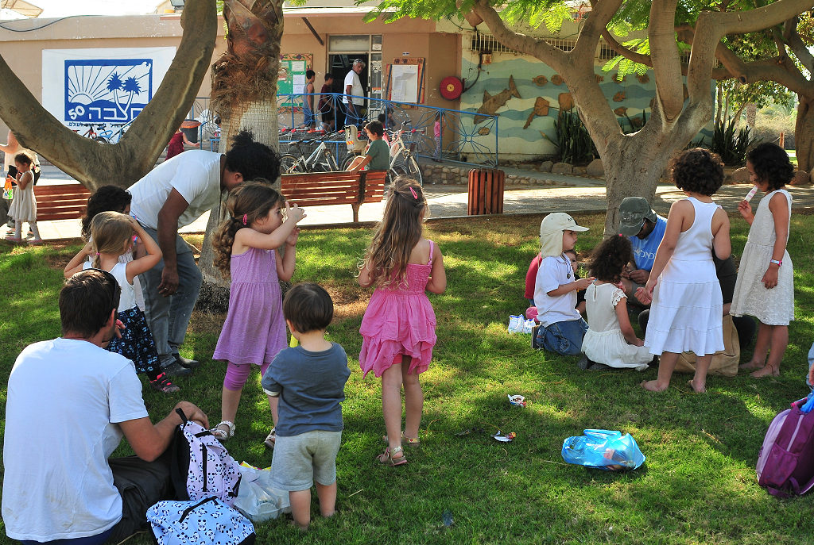
התיישבות בערבה
ערבה זה בית
הערבה משתרעת מים המלח בצפון ועד ים סוף בדרום. ההתיישבות בה החלה בשנות החמישים של המאה הקודמת, עם הקמת קיבוץ יטבתה ומושב עין יהב. החלוצים מצאו ארץ שוממה, אקלים קיצוני ומעט מאוד מים. בזכות נחישות, יצירתיות ואורך רוח הם הקימו יישובים חקלאיים לתפארת וקהילות מגובשות ורב-גילאיות.
הערבה מחולקת לשתי מועצות אזוריות: חבל אילות בדרום, עם אחד עשר קיבוצים שיתופיים ומתחדשים ויישוב קהילתי אחד, וערבה תיכונה בצפון, עם חמישה מושבים חקלאיים ושני יישובים קהילתיים.
מראשית דרכה העמותה לוקחת חלק בקידום ההתיישבות בערבה, דרך תכניותיה הרבות ודרך חשיפת האזור למספר הולך וגדל של צעירים מכל הארץ. יוזמה של קק"ל אפשרה לעמותה לקדם מהלכים ופעילויות שהשפיעו ישירות על הצמיחה הדמוגרפית בערבה.
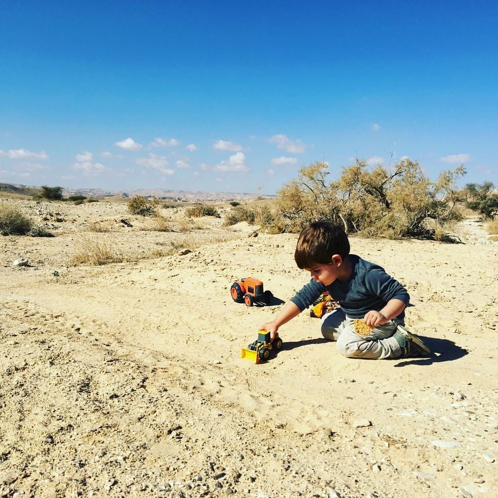
החיים בערבה
קק"ל 2040
בעשורים האחרונים רוב המאמצים והמשאבים לפיתוח ההתיישבות והתשתיות רוכזו בערים הגדולות ובמרכז הארץ, וכך נוצרים לאורך זמן ריכוזי אוכלוסייה צפופים מאוד. כדי לשנות את המגמה יצאה הקרן הקיימת לישראל בפרויקט ישראל 2040, שמטרתו לקדם התיישבות בפריפריה הגיאוגרפית של ישראל, בדגש על הגליל והנגב.
בסיוע קק"ל, מדינת ישראל וגופים פילנתרופיים נוספים, ננקטו צעדים משמעותיים לפיתוח ההתיישבות בערבה: שיפור ובניית תשתיות, הרחבות יישובים ופרויקטים רבים בחינוך ובתעסוקה. כיום כמעט כל יישובי האזור פתוחים לקליטה במגוון מסלולים: בנייה בהרחבות קהילתיות במושבים ובקיבוצים מתחדשים, "בנה ביתך" ביישובים קהילתיים, וקליטה בקיבוצים השיתופיים.
קהילה
בכל יישובי הערבה, בין שמדובר במושב חקלאי ובין שבקיבוץ שיתופי, בולטות קהילתיות ולכידות חברתית. הן באות לידי ביטוי בחגים משותפים ובאירועים אזוריים רבים לאורך השנה, בשגרה ובחירום. הקהילה מאפשרת מעורבות ומעודדת התנדבות בכל תחומי החיים ובכל גיל.
חיי התרבות עשירים: הצגות, מופעים, הרצאות, חוגים ופעילויות לילדים, לנוער, לצעירים, למשפחות ולגיל השלישי. בכל שנה מתקיימים בערבה פסטיבלים ואירועים שמושכים קהל רב מהארץ ומהעולם: יום פתוח בערבה (התערוכה החקלאית הגדולה בארץ), פסטיבל הסרטים הבינלאומי בצוקים, פסטיבלים והופעות בפארק תמנע, מרוצי אופניים ותחרויות ספורט ארציות ובינלאומיות.
חינוך
בערבה פועלים שני בתי ספר אזוריים: מעלה שחרות בקיבוץ יטבתה, לתלמידי א'–י"ב מחבל אילות, ושיטים ביישוב ספיר, לתלמידי א'–י"ב מהערבה התיכונה.
למרות המרחק מהמרכז, מערכות החינוך המקומיות עושות את המרב כדי לגשר על הפערים ומציעות מסלולים מגוונים: ממלכתי, אנתרופוסופי, סביבתי ודמוקרטי. הן גם משקיעות בחיזוק מגמות כמו מחול, מדעים, טכנולוגיה ומוזיקה. החינוך הבלתי פורמלי מקבל דגש רב, הן מצד המועצות והן מצד התושבים, שמעורבים בפעילויות ובוועדות.
תעסוקה
בראשית ימיה של הערבה התעסוקה העיקרית הייתה חקלאות. החקלאות בערבה היא חוד החנית של המחקר, הפיתוח והיישום החקלאי ברמה העולמית, ומקור לגאווה לאומית.
בשני העשורים האחרונים התפתחו בערבה תחומי תעסוקה נוספים: אנרגיה מתחדשת, מחקר מדעי, תיירות ויזמות. רבים מתושבי הערבה עוסקים גם בחינוך, בהנדסה ובמגוון רחב של מקצועות חופשיים.
הכירו את יישובי הערבה
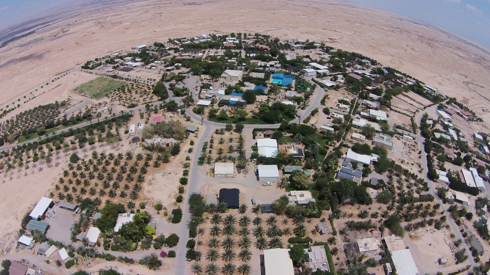
עידן
מושב עובדים חקלאי חילוני, הצעיר במושבי הערבה. הוקם על אדמת חוואר בקצה הצפוני של המועצה, סמוך לנחל עידן. בעידן מתגוררות 85 משפחות, עם חיי חברה וקהילה מפותחים שמשלבים את כל הגילאים.
לפרטים על הקליטה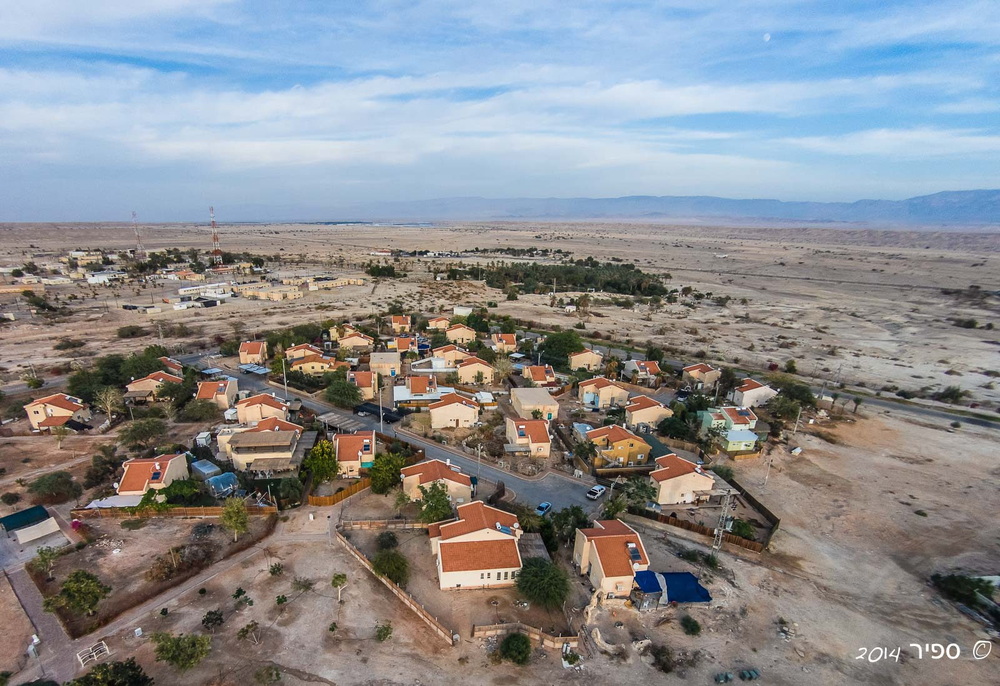
ספיר
יישוב קהילתי כפרי בלב הערבה התיכונה, שהוקם ב-1978 ונקרא על שם שר האוצר פנחס ספיר. ספיר היא המרכז האזורי, עם משרדי המועצה, בית הספר האזורי, מרכז קהילה, אולם מופעים, קאנטרי ובריכה.
לפרטים על הקליטה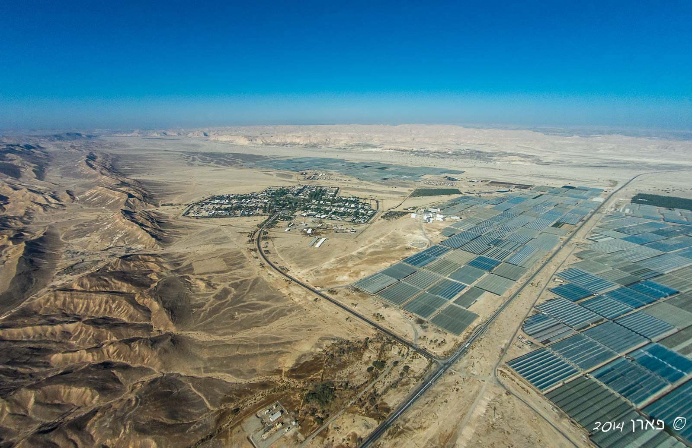
פארן
עלה לקרקע ב-1976 בשפך נחל פארן לנחל ערבה, לאורך כביש 90, כ-100 ק"מ צפונית לאילת. מושב רב-דורי (שלושה דורות) שבו מתגוררות 120 משפחות, עם חיי קהילה מפותחים.
לפרטים על הקליטהחצבה
עלה לקרקע ב-1965 כהיאחזות נח"ל, ואוזרח ב-1967. מהיישובים הוותיקים באזור: מושב עובדים רב-דורי וחילוני, שבו מתגוררות כ-180 משפחות, עם חגים משותפים, אירועים ויוזמות חברתיות.
לפרטים על הקליטה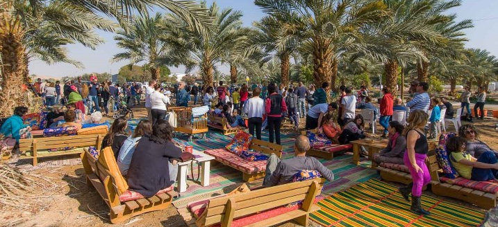
צופר
החל כהיאחזות נח"ל ב-1968, וב-1981 עבר למקומו הנוכחי. מושב רב-דורי שבו מתגוררות 110 משפחות, כ-350 תושבים. חזרת הדור השני עם הנכדים נתנה זריקת עידוד משמעותית לחיי הקהילה.
לפרטים על הקליטה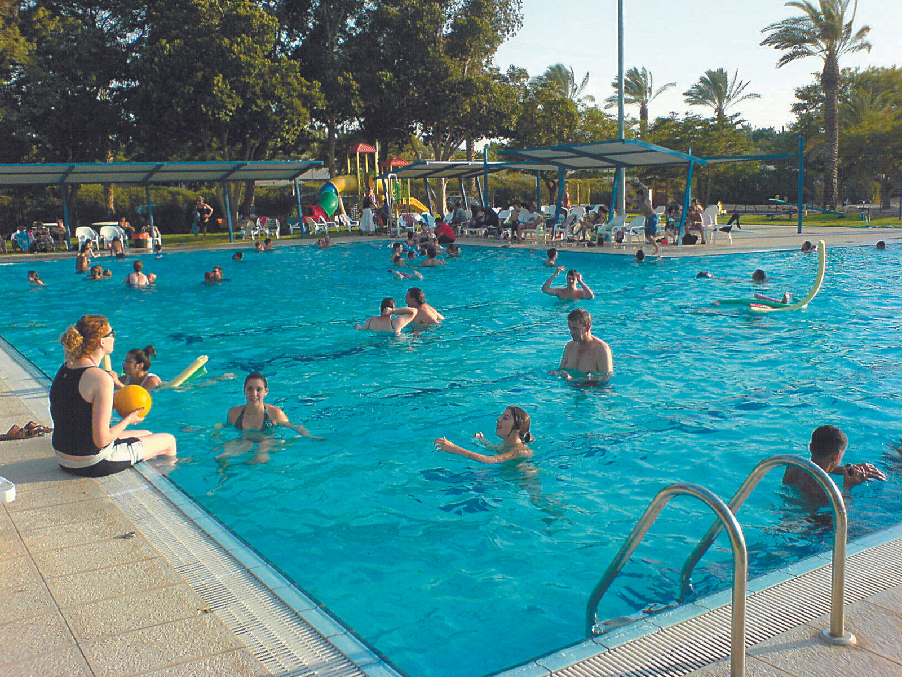
עין יהב
הוקם ב-1959 בלב הערבה התיכונה, במפגש נחל נקרות ונחל הערבה. המושב הראשון והגדול בערבה, שבו מתגוררות מעל 200 משפחות. מושב רב-דורי, וזה חוזקו וגאוותו.
לפרטים על הקליטה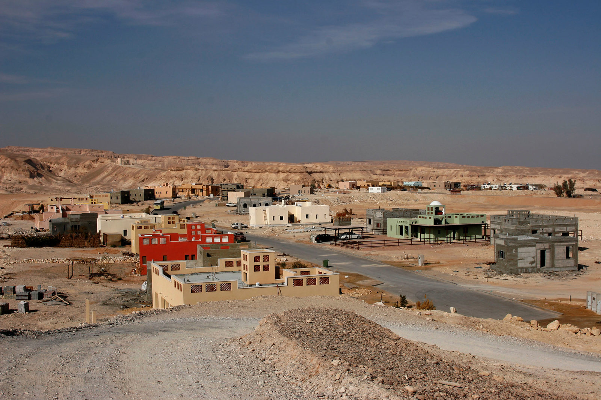
צוקים
יישוב קהילתי שהוקם ב-2004 על ידי גרעין של אנשים ממרכז הארץ בשנות ה-40 לחייהם, שביקשו לשנות את אורח חייהם. היישוב הוקם סמוך למתחם תיירותי של מיזמים אישיים, ברוח של חיים מדבריים שמכבדים את הטבע.
לפרטים על הקליטה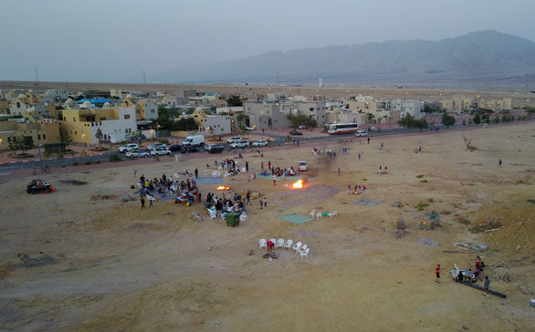
באר אורה
יישוב קהילתי בין אילות לאליפז, כ-20 ק"מ צפונית לאילת, ליד שדה התעופה רמון. הוקם ב-2005 ליד שרידי מחנה הגדנ"ע, והוא האחרון שקם בחבל אילות. מתאפיין בסגנון בנייה ייחודי ובהון אנושי מיוחד.
לפרטים על הקליטה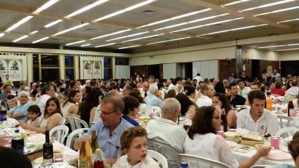
קיבוץ יטבתה
הוקם ב-1957. היישוב הוותיק בערבה והקיבוץ הגדול בחבל אילות. בניגוד למגמת ההפרטה, השיתוף ביטבתה נטוע עמוק באורח החיים: חדר האוכל, התרבות, החינוך, אמצעי הייצור והנכסים.
לפרטים על הקליטה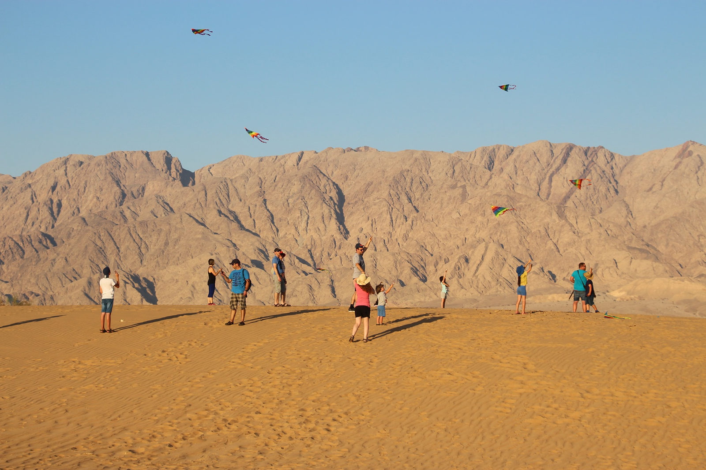
קיבוץ סמר
קיבוץ שיתופי בערבה הדרומית, כ-35 ק"מ צפונית לאילת, שהוקם ב-1976 על ידי הקיבוץ הארצי. בקהילה כ-300 איש: חברים, נקלטים, מתנדבים מהארץ ומחו"ל, שינשינים, של"תניקים ועוד.
לפרטים על הקליטה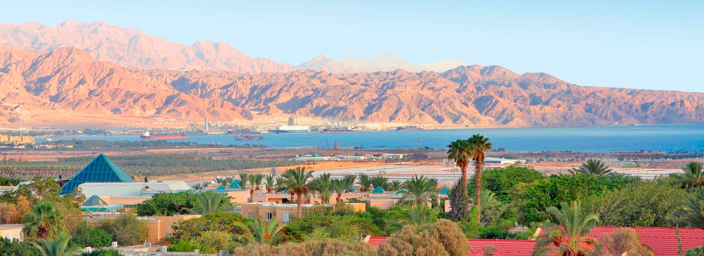
קיבוץ אילות
הוקם ב-1962 בנקודה הדרומית ביותר של חבל אילות, 3 ק"מ מצפון לאילת, מול נופי מפרץ אילת, הרי אדום והרי אילת. בשנים האחרונות עבר תהליכי שינוי בחברה, בחינוך, בתעסוקה ובקליטה.
לפרטים על הקליטה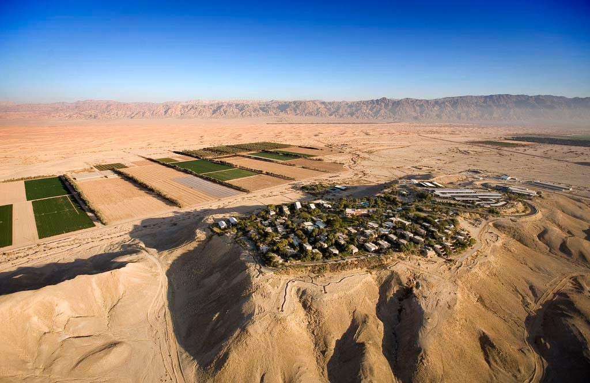
קיבוץ גרופית
קיבוץ חקלאי חילוני על גבעה בחבל אילות, שהוקם ב-1963 ומונה כ-92 חברים. שומר על צביון שיתופי בחינוך, בבריאות ובערבות ההדדית, ובשאר התחומים מעניק לחבר חופש מרבי, בפתיחות ובסובלנות.
לפרטים על הקליטה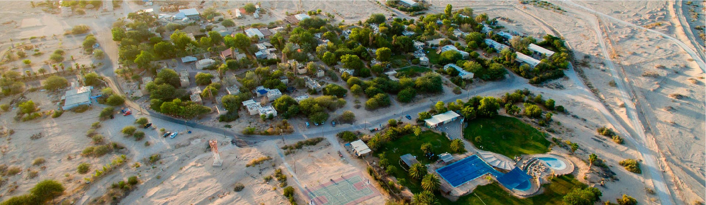
קיבוץ לוטן
הוקם ב-1983 על ידי גרעיני נח"ל, סמוך לצומת קטורה, כ-40 ק"מ מאילת. קהילה אקו-יהודית, רבגונית ופלורליסטית של כ-200 תושבים, עם פעילות תרבותית, חינוכית ורוחנית.
לפרטים על הקליטה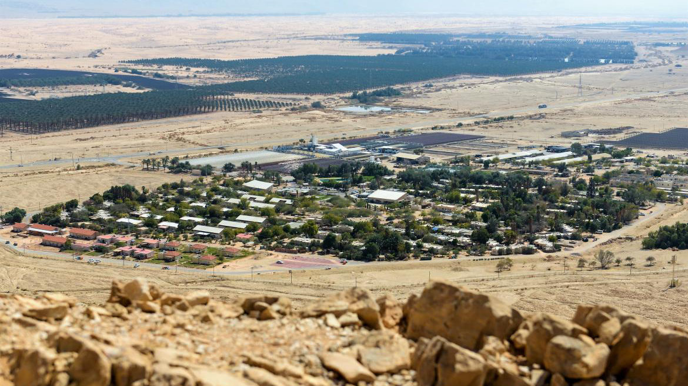
קיבוץ קטורה
הוקם ב-1973, מיד אחרי מלחמת יום כיפור, כקהילה שיתופית פלורליסטית עם יחס חיובי למסורת. בית הכנסת פועל ברוח התנועה המסורתית, הקיבוץ שומר שבת וכשרות במרחב הציבורי, ובסוכות חדר האוכל כולו עובר לסוכה ענקית.
לפרטים על הקליטה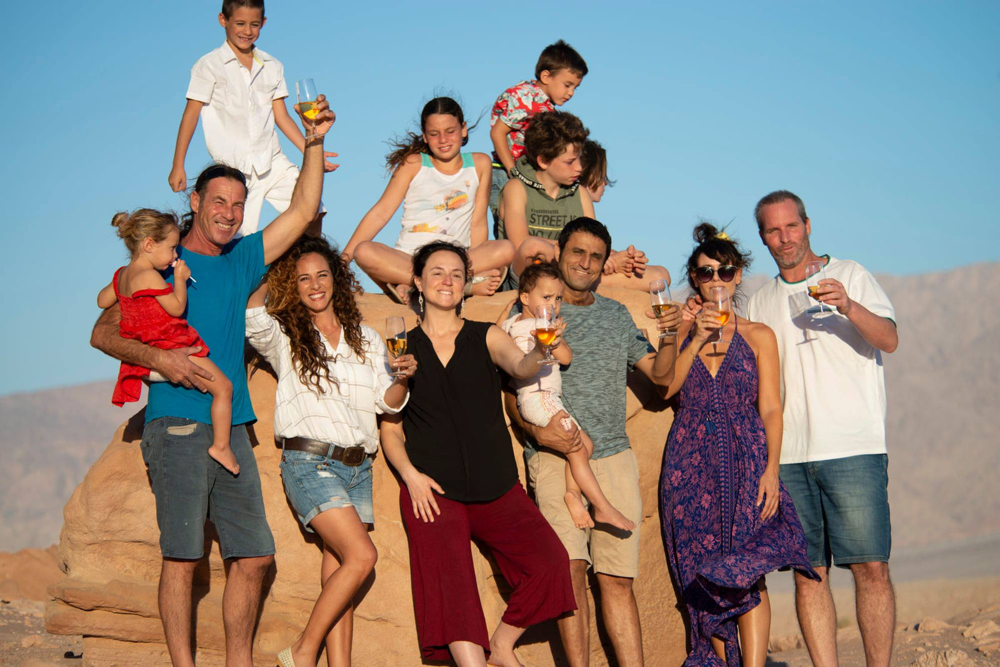
קיבוץ אליפז
בחבל אילות, כ-20 ק"מ מאילת, בכניסה לפארק תמנע. הוקם ב-1983 על ידי גרעינים של השומר הצעיר, ומונה כ-60 חברים וכ-70 ילדים. מאז 2016 עושה את צעדיו הראשונים כקיבוץ מתחדש.
לפרטים על הקליטה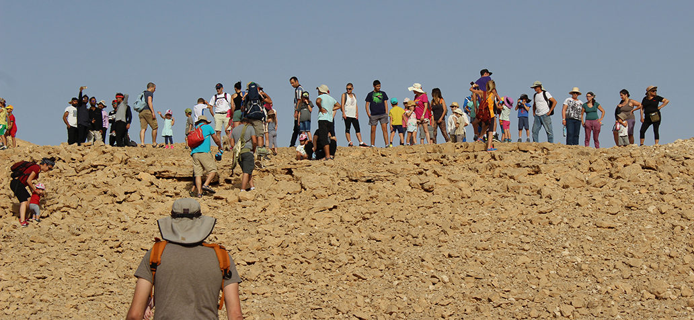
קיבוץ יהל
הצפוני בקיבוצי הערבה הדרומית, שהוקם ב-1977 על ידי התנועה ליהדות מתקדמת. כ-50 משפחות חיות בו חיי קהילה של ערבות הדדית, ובהן עולים חדשים, חילונים, רפורמים ואתאיסטים.
לפרטים על הקליטה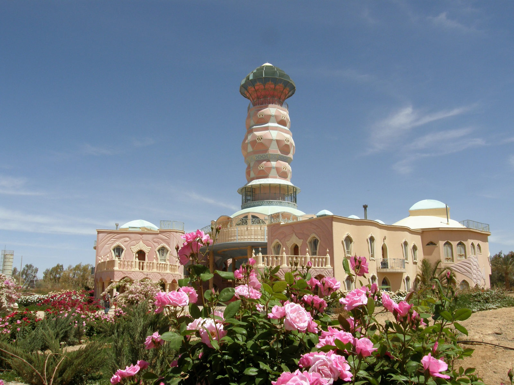
קיבוץ נאות סמדר
שוכן בגב ההר בנגב הדרומי, כ-70 ק"מ צפונית לאילת. הוקם ב-1989 על ידי חברים מירושלים, כקהילה לומדת שבוחנת בפועל שאלות על הניכור בין בני אדם ועל היחס של האדם לעצמו.
לפרטים על הקליטה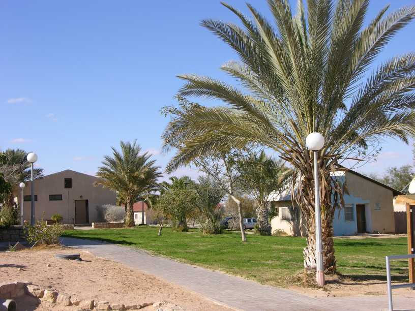
קיבוץ נווה חריף
קיבוץ חקלאי חילוני מתחדש, כ-60 ק"מ צפונית לאילת. הוקם ב-1987 כקיבוץ תעשייתי, ואחרי כעשור הוסב לחקלאות: מטעים, רפת ולולים. שומר על אופי קהילתי שיתופי לצד עצמאות כלכלית.
לפרטים על הקליטהחושבים לעבור לערבה?
נשמח לחבר אתכם ליישובים ולגורמי הקליטה.